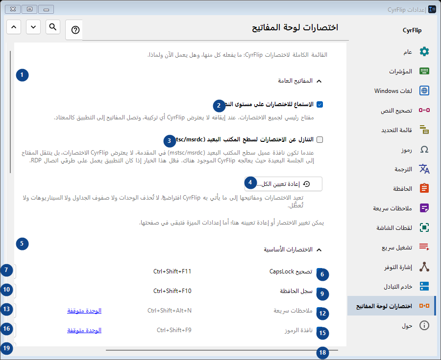
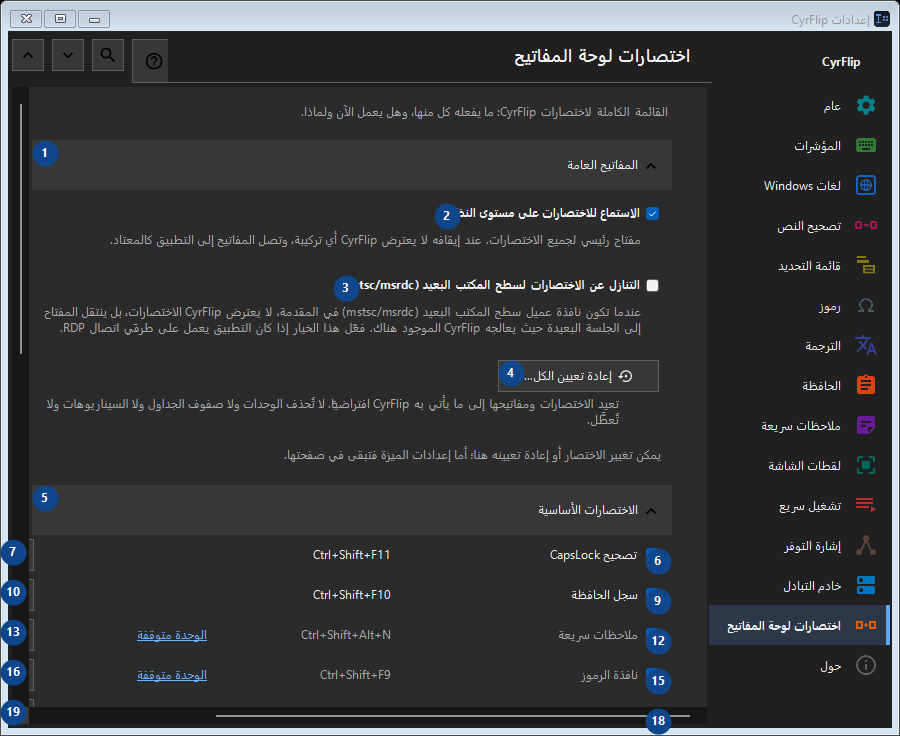

اختصارات لوحة المفاتيح
الغرض
القائمة الكاملة لاختصارات CyrFlip: ما يفعله كل منها، وهل يعمل الآن ولماذا.


ترتيب الاستخدام
تُطبق الإعدادات فورًا. لا يوجد ترتيب إلزامي؛ استخدم المجموعات أدناه.
العناصر
1. المفاتيح العامة
استخدم هذا الأمر لتنفيذ الإجراء المذكور. اقرأ أي طلب تأكيد قبل الموافقة.
اختصاراتك2. الاستماع للاختصارات على مستوى النظام
مفتاح رئيسي لجميع الاختصارات. عند إيقافه لا يعترض CyrFlip أي تركيبة، وتصل المفاتيح إلى التطبيق كالمعتاد.
اختصاراتك3. التنازل عن الاختصارات لسطح المكتب البعيد (mstsc/msrdc)
عندما تكون نافذة عميل سطح المكتب البعيد (mstsc/msrdc) في المقدمة، لا يعترض CyrFlip الاختصارات، بل ينتقل المفتاح إلى الجلسة البعيدة حيث يعالجه CyrFlip الموجود هناك. فعّل هذا الخيار إذا كان التطبيق يعمل على طرفَي اتصال RDP.
اختصاراتك4. إعادة تعيين الكل...
تعيد الاختصارات ومفاتيحها إلى ما يأتي به CyrFlip افتراضيًا. لا تُحذف الوحدات ولا صفوف الجداول ولا السيناريوهات ولا تُعطَّل.
اختصاراتك5. الاختصارات الأساسية
استخدم هذا الأمر لتنفيذ الإجراء المذكور. اقرأ أي طلب تأكيد قبل الموافقة.
اختصاراتك6. تصحيح CapsLock Ctrl+Shift+F11
استخدم هذا الأمر لتنفيذ الإجراء المذكور. اقرأ أي طلب تأكيد قبل الموافقة.
اختصاراتك7. تغيير... - تصحيح CapsLock Ctrl+Shift+F11
استخدم هذا الأمر لتنفيذ الإجراء المذكور. اقرأ أي طلب تأكيد قبل الموافقة.
اختصاراتك8. تعيين كافتراضي - تصحيح CapsLock Ctrl+Shift+F11
استخدم هذا الأمر لتنفيذ الإجراء المذكور. اقرأ أي طلب تأكيد قبل الموافقة. هذا العنصر غير متاح حاليًا. فعّل الميزة أو اختر إدخالًا أولًا.
اختصاراتك9. سجل الحافظة Ctrl+Shift+F10
استخدم هذا الأمر لتنفيذ الإجراء المذكور. اقرأ أي طلب تأكيد قبل الموافقة.
اختصاراتك10. تغيير... - سجل الحافظة Ctrl+Shift+F10
استخدم هذا الأمر لتنفيذ الإجراء المذكور. اقرأ أي طلب تأكيد قبل الموافقة.
اختصاراتك11. تعيين كافتراضي - سجل الحافظة Ctrl+Shift+F10
استخدم هذا الأمر لتنفيذ الإجراء المذكور. اقرأ أي طلب تأكيد قبل الموافقة. هذا العنصر غير متاح حاليًا. فعّل الميزة أو اختر إدخالًا أولًا.
اختصاراتك12. ملاحظات سريعة Ctrl+Shift+Alt+N
استخدم هذا الأمر لتنفيذ الإجراء المذكور. اقرأ أي طلب تأكيد قبل الموافقة.
اختصاراتك13. تغيير... - ملاحظات سريعة Ctrl+Shift+Alt+N
استخدم هذا الأمر لتنفيذ الإجراء المذكور. اقرأ أي طلب تأكيد قبل الموافقة.
اختصاراتك14. تعيين كافتراضي - ملاحظات سريعة Ctrl+Shift+Alt+N
استخدم هذا الأمر لتنفيذ الإجراء المذكور. اقرأ أي طلب تأكيد قبل الموافقة. هذا العنصر غير متاح حاليًا. فعّل الميزة أو اختر إدخالًا أولًا.
اختصاراتك15. نافذة الرموز Ctrl+Shift+F9
استخدم هذا الأمر لتنفيذ الإجراء المذكور. اقرأ أي طلب تأكيد قبل الموافقة.
اختصاراتك16. تغيير... - نافذة الرموز Ctrl+Shift+F9
استخدم هذا الأمر لتنفيذ الإجراء المذكور. اقرأ أي طلب تأكيد قبل الموافقة.
اختصاراتك17. تعيين كافتراضي - نافذة الرموز Ctrl+Shift+F9
استخدم هذا الأمر لتنفيذ الإجراء المذكور. اقرأ أي طلب تأكيد قبل الموافقة. هذا العنصر غير متاح حاليًا. فعّل الميزة أو اختر إدخالًا أولًا.
اختصاراتك18. إشارة التوفر Ctrl+Shift+Alt+T
استخدم هذا الأمر لتنفيذ الإجراء المذكور. اقرأ أي طلب تأكيد قبل الموافقة.
اختصاراتك19. تغيير... - إشارة التوفر Ctrl+Shift+Alt+T
استخدم هذا الأمر لتنفيذ الإجراء المذكور. اقرأ أي طلب تأكيد قبل الموافقة.
اختصاراتك20. تعيين كافتراضي - إشارة التوفر Ctrl+Shift+Alt+T
استخدم هذا الأمر لتنفيذ الإجراء المذكور. اقرأ أي طلب تأكيد قبل الموافقة. هذا العنصر غير متاح حاليًا. فعّل الميزة أو اختر إدخالًا أولًا.
اختصاراتك21. لقطة لجزء من الشاشة Ctrl+F12
استخدم هذا الأمر لتنفيذ الإجراء المذكور. اقرأ أي طلب تأكيد قبل الموافقة.
اختصاراتك22. تغيير... - لقطة لجزء من الشاشة Ctrl+F12
استخدم هذا الأمر لتنفيذ الإجراء المذكور. اقرأ أي طلب تأكيد قبل الموافقة.
اختصاراتك23. تعيين كافتراضي - لقطة لجزء من الشاشة Ctrl+F12
استخدم هذا الأمر لتنفيذ الإجراء المذكور. اقرأ أي طلب تأكيد قبل الموافقة. هذا العنصر غير متاح حاليًا. فعّل الميزة أو اختر إدخالًا أولًا.
اختصاراتك24. لقطة لكامل الشاشة Ctrl+F11
استخدم هذا الأمر لتنفيذ الإجراء المذكور. اقرأ أي طلب تأكيد قبل الموافقة.
اختصاراتك25. تغيير... - لقطة لكامل الشاشة Ctrl+F11
استخدم هذا الأمر لتنفيذ الإجراء المذكور. اقرأ أي طلب تأكيد قبل الموافقة.
اختصاراتك26. تعيين كافتراضي - لقطة لكامل الشاشة Ctrl+F11
استخدم هذا الأمر لتنفيذ الإجراء المذكور. اقرأ أي طلب تأكيد قبل الموافقة. هذا العنصر غير متاح حاليًا. فعّل الميزة أو اختر إدخالًا أولًا.
اختصاراتك27. لقطة جزء مع رسم Ctrl+Alt+F12
استخدم هذا الأمر لتنفيذ الإجراء المذكور. اقرأ أي طلب تأكيد قبل الموافقة.
اختصاراتك28. تغيير... - لقطة جزء مع رسم Ctrl+Alt+F12
استخدم هذا الأمر لتنفيذ الإجراء المذكور. اقرأ أي طلب تأكيد قبل الموافقة.
اختصاراتك29. تعيين كافتراضي - لقطة جزء مع رسم Ctrl+Alt+F12
استخدم هذا الأمر لتنفيذ الإجراء المذكور. اقرأ أي طلب تأكيد قبل الموافقة. هذا العنصر غير متاح حاليًا. فعّل الميزة أو اختر إدخالًا أولًا.
اختصاراتك30. لقطة كامل الشاشة مع رسم Ctrl+Alt+F11
استخدم هذا الأمر لتنفيذ الإجراء المذكور. اقرأ أي طلب تأكيد قبل الموافقة.
اختصاراتك31. تغيير... - لقطة كامل الشاشة مع رسم Ctrl+Alt+F11
استخدم هذا الأمر لتنفيذ الإجراء المذكور. اقرأ أي طلب تأكيد قبل الموافقة.
اختصاراتك32. تعيين كافتراضي - لقطة كامل الشاشة مع رسم Ctrl+Alt+F11
استخدم هذا الأمر لتنفيذ الإجراء المذكور. اقرأ أي طلب تأكيد قبل الموافقة. هذا العنصر غير متاح حاليًا. فعّل الميزة أو اختر إدخالًا أولًا.
اختصاراتك33. فتح مجلد لقطات الشاشة Ctrl+F10
استخدم هذا الأمر لتنفيذ الإجراء المذكور. اقرأ أي طلب تأكيد قبل الموافقة.
اختصاراتك34. تغيير... - فتح مجلد لقطات الشاشة Ctrl+F10
استخدم هذا الأمر لتنفيذ الإجراء المذكور. اقرأ أي طلب تأكيد قبل الموافقة.
اختصاراتك35. تعيين كافتراضي - فتح مجلد لقطات الشاشة Ctrl+F10
استخدم هذا الأمر لتنفيذ الإجراء المذكور. اقرأ أي طلب تأكيد قبل الموافقة. هذا العنصر غير متاح حاليًا. فعّل الميزة أو اختر إدخالًا أولًا.
اختصاراتك36. فتح القائمة من لوحة المفاتيح Ctrl+Shift+Alt+M
استخدم هذا الأمر لتنفيذ الإجراء المذكور. اقرأ أي طلب تأكيد قبل الموافقة.
اختصاراتك37. تغيير... - فتح القائمة من لوحة المفاتيح Ctrl+Shift+Alt+M
استخدم هذا الأمر لتنفيذ الإجراء المذكور. اقرأ أي طلب تأكيد قبل الموافقة.
اختصاراتك38. تعيين كافتراضي - فتح القائمة من لوحة المفاتيح Ctrl+Shift+Alt+M
استخدم هذا الأمر لتنفيذ الإجراء المذكور. اقرأ أي طلب تأكيد قبل الموافقة. هذا العنصر غير متاح حاليًا. فعّل الميزة أو اختر إدخالًا أولًا.
اختصاراتك39. إرسال الحافظة إلى الخادم
استخدم هذا الأمر لتنفيذ الإجراء المذكور. اقرأ أي طلب تأكيد قبل الموافقة.
اختصاراتك40. تغيير... - إرسال الحافظة إلى الخادم
استخدم هذا الأمر لتنفيذ الإجراء المذكور. اقرأ أي طلب تأكيد قبل الموافقة.
اختصاراتك41. تعيين كافتراضي - إرسال الحافظة إلى الخادم
استخدم هذا الأمر لتنفيذ الإجراء المذكور. اقرأ أي طلب تأكيد قبل الموافقة. هذا العنصر غير متاح حاليًا. فعّل الميزة أو اختر إدخالًا أولًا.
اختصاراتك42. الحصول على الحافظة من الخادم
استخدم هذا الأمر لتنفيذ الإجراء المذكور. اقرأ أي طلب تأكيد قبل الموافقة.
اختصاراتك43. تغيير... - الحصول على الحافظة من الخادم
استخدم هذا الأمر لتنفيذ الإجراء المذكور. اقرأ أي طلب تأكيد قبل الموافقة.
اختصاراتك44. تعيين كافتراضي - الحصول على الحافظة من الخادم
استخدم هذا الأمر لتنفيذ الإجراء المذكور. اقرأ أي طلب تأكيد قبل الموافقة. هذا العنصر غير متاح حاليًا. فعّل الميزة أو اختر إدخالًا أولًا.
اختصاراتك45. الفأرة
استخدم هذا الأمر لتنفيذ الإجراء المذكور. اقرأ أي طلب تأكيد قبل الموافقة.
اختصاراتك46. تغيير... - قائمة فوق التحديد Ctrl + زر الفأرة الأيمن
استخدم هذا الأمر لتنفيذ الإجراء المذكور. اقرأ أي طلب تأكيد قبل الموافقة.
اختصاراتك47. تعيين كافتراضي - قائمة فوق التحديد Ctrl + زر الفأرة الأيمن
استخدم هذا الأمر لتنفيذ الإجراء المذكور. اقرأ أي طلب تأكيد قبل الموافقة. هذا العنصر غير متاح حاليًا. فعّل الميزة أو اختر إدخالًا أولًا.
اختصاراتك48. تحويل التخطيطات
استخدم هذا الأمر لتنفيذ الإجراء المذكور. اقرأ أي طلب تأكيد قبل الموافقة.
اختصاراتك49. الترجمة
استخدم هذا الأمر لتنفيذ الإجراء المذكور. اقرأ أي طلب تأكيد قبل الموافقة.
اختصاراتك50. تشغيل سريع
استخدم هذا الأمر لتنفيذ الإجراء المذكور. اقرأ أي طلب تأكيد قبل الموافقة.
اختصاراتك51. Windows
استخدم هذا الأمر لتنفيذ الإجراء المذكور. اقرأ أي طلب تأكيد قبل الموافقة.
اختصاراتك